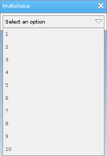

Löve Frames - The Multichoice Object
Return to Index
Information
The multichoice object is a dropdown list.
Example Use
local frame = loveframes.Create("frame")
frame:SetName("Multichoice")
frame:SetSize(210, 60)
frame:CenterWithinArea(unpack(demo.centerarea))
local multichoice = loveframes.Create("multichoice", frame)
multichoice:SetPos(5, 30)
for i=1, 10 do
multichoice:AddChoice(i)
end

Event Callbacks
OnChoiceSelected - Called when a choice is selected
- Arguments passed: self [object], choice [string]
- Arguments passed: self [object], choice [string]
local multichoice = loveframes.Create("multichoice")
multichoice.OnChoiceSelected = function(object, choice)
print(choice .. " was selected.")
end
Methods
AddChoice - Adds a choice to the object
- Note: Does not call the OnChoiceSelected callback.
- Note: This method is used by the object internally. You should not use it unless you know what you are doing.
- Returns 1 value: choice [string]
- Returns 1 value: value [string]
- Note: This is the same as GetChoice()
- Returns 1 value: text [string]
- Returns 1 value: scroll amount [number]
- Returns 1 value: scroll amount [number]
- Returns 1 value: dtscrolling [boolean]
- Note: If no function is specified then the object will use it's default sorting function
- Returns 1 value: enabled [bool]
object:SetText(text[string])SetChoice - Sets the current choice of the object
- Note: Does not call the OnChoiceSelected callback.
object:SetChoice(choice[string])SelectChoice - Sets the current choice of the object
- Note: This method is used by the object internally. You should not use it unless you know what you are doing.
object:SelectChoice(choice[string])SetListHeight - Sets the current choice of the object
object:SetListHeight(height[number])SetPadding - Sets the object's padding
object:SetPadding(padding[number])SetSpacing - Sets the object's spacing
object:SetSpacing(spacing[number])GetChoice - Gets the object's current choice
- Returns 1 value: choice [string]
local choice = object:GetChoice()GetValue - Gets the object's current choice
- Returns 1 value: value [string]
- Note: This is the same as GetChoice()
local value = object:GetValue()SetText - Sets the object's text
object:SetText(text[string])GetText - Gets the object's text
- Returns 1 value: text [string]
local text = object:GetText()SetButtonScrollAmount - Sets the amount that the object's scroll buttons will scroll the object's list items by
object:SetButtonScrollAmount(scrollamount[number])GetButtonScrollAmount - Sets the amount that the object's scroll buttons will scroll the object's list items by
- Returns 1 value: scroll amount [number]
local scrollamount = object:GetButtonScrollAmount()SetMouseWheelScrollAmount - Sets the amount that the mouse wheel will scroll the object's list items by
object:SetMouseWheelScrollAmount(scrollamount[number])GetMouseWheelScrollAmount - Gets the mouse wheel's scroll amount
- Returns 1 value: scroll amount [number]
local scrollamount = object:GetMouseWheelScrollAmount()SetDTScrolling - Sets whether or not the object should use delta time when caclulating how many pixels it's scrollbar needs to move
object:SetDTScrolling(dtscrolling[boolean])GetDTScrolling - Gets whether or not the object should use delta time when caclulating how many pixels it's scrollbar needs to move
- Returns 1 value: dtscrolling [boolean]
local dtscrolling = object:GetDTScrolling()Sort - Sorts the object's choices
- Note: If no function is specified then the object will use it's default sorting function
local func = function(a, b) a < b end object:Sort(func[function])SetSortFunction - Sets the object's default soring function
local func = function(a, b) a < b end object:SetSortFunction(func[function])GetSortFunction - Gets the object's default soring function
local func = object:GetSortFunction()SetSortFunction - Sets the object's default soring function
local func = function(a, b) a < b end object:SetSortFunction(func[function])GetSortFunction - Gets the object's default soring function
local func = object:GetSortFunction()RemoveChoice - Removes a choice from the object's list of choices
object:RemoveChoice(choice[string])Clear - Removes all choices from the object's list of choices
object:Clear()SetEnabled - Enables or disables the object
object:SetEnabled(enabled[bool])GetEnabled - Gets whether or not the object is enabled
- Returns 1 value: enabled [bool]
local enabled = object:GetEnabled()